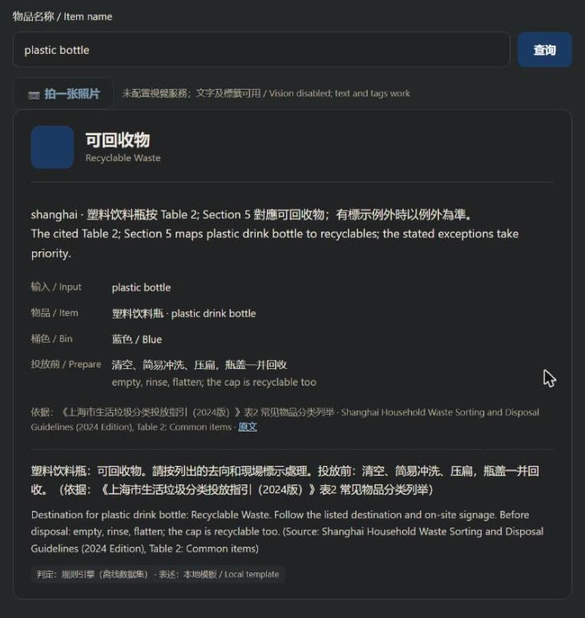
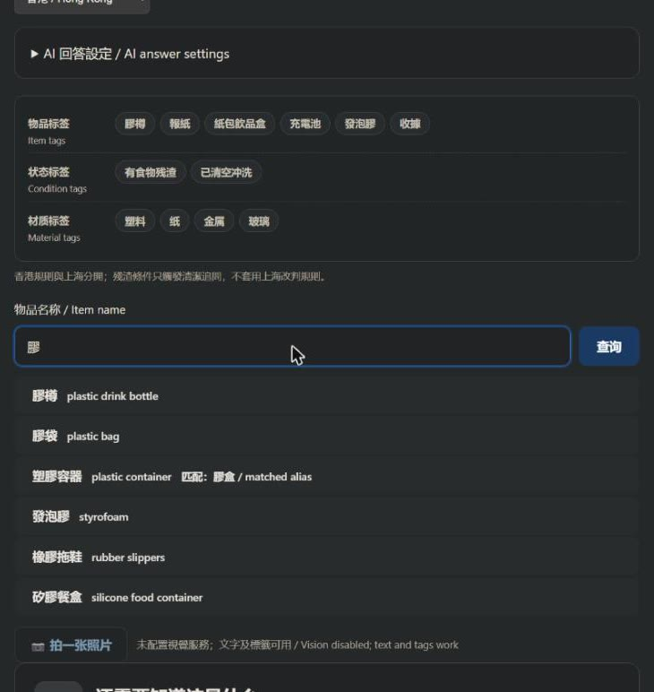

Users and problem
Who it's for
Students and residents who move between Shanghai and Hong Kong, such as HKU students on both campuses.
The problem
The two cities sort waste differently. General chatbots mix up their rules and seldom cite a source.
Not for
- prices
- collection-point locations
- "should I throw it away"
- medical / legal advice
- overriding on-site signs
Workflow: input → processing → output
Chinese or English text, plus optional condition tags
香港 · 膠Lists matching names. The user picks one; nothing is auto-submitted.
膠 → 膠樽 · plastic bottleExact match in that city's reviewed dataset; tags apply fixed rules
offline · no API keyDeepSeek chooses between two wordings we pre-wrote. It cannot change the facts.
falls back to local textBin, colour, preparation, caveat and link to the official source
bilingualDomain customisation
Shanghai
68 entriesHong Kong
45 entriesCOMMUNITY
A real run
Screenshots of the real app running offline (python src/app.py --offline) on 18 Nov 2026. No mock-ups.




Run it yourself
$ git clone https://github.com/hryLiuYibo/AILT9019_Team11_Project.git $ cd AILT9019_Team11_Project $ python tests/run_tests.py # → ALL PASS $ python src/app.py --offline # → open localhost:8000
- Python 3.10+
- Standard library only
- No API key
- Works offline
| City | Input | Expected output |
|---|---|---|
| Shanghai | plastic bottle | Recyclable |
| Hong Kong | plastic bottle | Plastic |
| Hong Kong | milk carton | Carton stream |
| Shanghai | milk carton | ? local collection |
| Either | plastic | ? name the item |
| Either | rinsed + residue | ✕ conflict |
Evaluation results
Goal: the right city-specific, sourced answer for known items, and a question or refusal instead of a guess for anything else.
Held-out phrasings (20 per city, never used for tuning)
Same result in both cities. Evidence: tests/run_tests.py, tools/evaluate_recall.py, offline run on 13 Nov 2026. The optional AI wording passed one live DeepSeek query (a smoke test, not a reliability test).